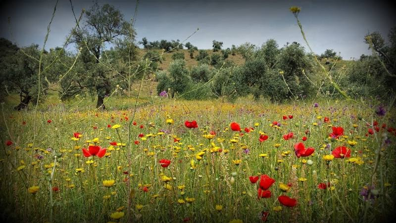

Parcours & expérience
Postes et séjours
2019–2023 — Chargée d’enseignement / PCC · École polytechnique, CMAP
Sept.–oct. 2015 — Chercheuse invitée · Georgia Institute of Technology, Atlanta
2009–aujourd’hui — Maîtresse de conférences en mathématiques appliquées · Université Paris Dauphine–PSL, CEREMADE (CNRS UMR 7534)
2008–2009 — ATER · Université Paris Diderot, LPMA
Formation universitaire
2008 — Doctorat en statistique · Université Paris Diderot
2005 — Master 2 recherche, modélisation stochastique et statistique · Université Paris Diderot
2004 — Maîtrise de mathématiques appliquées · Université Pierre-et-Marie-Curie
Biographie
Mes recherches ont débuté par la statistique non paramétrique, les problèmes inverses et la tomographie quantique. Elles se sont progressivement élargies à la généralisation des réseaux de neurones, aux méthodes contrastives, au clustering et à l’apprentissage distribué robuste. Mon activité articule recherche fondamentale, encadrement doctoral, enseignement et collaborations avec des partenaires institutionnels et industriels.

Mes travaux actuels incluent l’inférence causale et contrefactuelle. Je développe également des recherches en apprentissage adversarial : attaques, défenses, vérification de la propriété des données et efficacité des méthodes d’apprentissage.